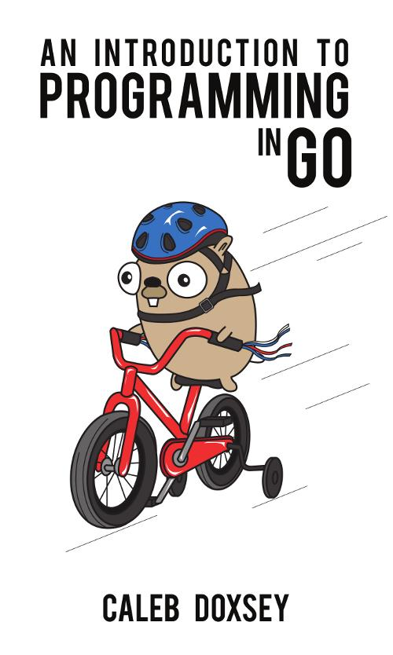

 去年在做golangserver的时候，内部比较头疼的就是在线服务发布的时候，大量用户的请求在发布时候会被重连，在那时候也想了n多的方法，最后还是落在一个github上的项目，facebook的一个golang项目grace，那时候简单研究测试了一下可以就直接在内部使用了起来，这段时间突然想起来，又想仔细研究一下这个项目了。
从原理上来说是这样一个过程：
- 发布新的bin文件去覆盖老的bin文件
- 发送一个信号量，告诉正在运行的进程，进行重启
- 正在运行的进程收到信号后，会以子进程的方式启动新的bin文件
- 新进程接受新请求，并处理
- 老进程不再接受请求，但是要等正在处理的请求处理完成，所有在处理的请求处理完之后，便自动退出
- 新进程在老进程退出之后，由init进程收养，但是会继续服务。
所以一步一步来看，关键是从第2步开始之后怎么做，所以我们先来看看第2步的实现，这个应该说很简单，发送信号量到一个进程，使用kill命令即可，在facebook这个项目中发送的信号量有3个：SIGINT，SIGTERM，SIGUSR2，前面两个信号收到后程序会直接退出，后面一个信号SIGUSR2才会执行所谓的优雅重启。 第3步，正在运行的进程收到SIGUSR2信号后，会以子进程的方式启动新的bin文件。先直接上代码看：https://github.com/facebookgo/grace/blob/master/gracehttp/http.go
func (a *app) signalHandler(wg *sync.WaitGroup) {
ch := make(chan os.Signal, 10)
signal.Notify(ch, syscall.SIGINT, syscall.SIGTERM, syscall.SIGUSR2)
for {
sig := <-ch
switch sig {
case syscall.SIGINT, syscall.SIGTERM:
// this ensures a subsequent INT/TERM will trigger standard go behaviour of
// terminating. 执行标准的go终止行为，程序就结束了
signal.Stop(ch)
a.term(wg)
return
case syscall.SIGUSR2: // 这里开始执行优雅重启
err := a.preStartProcess()
// 这个函数在源代码中没有具体实现功能，只是预留了一个钩子函数，用户可以注册自己的函数，可以在重启之前做些自定义的事情。一般情况下也没有什么可以做的，除非有些特殊的服务环境或是状态保存之类的，至少目前，我们的server还没有遇到
if err != nil {
a.errors <- err
}
// we only return here if there's an error, otherwise the new process
// will send us a TERM when it's ready to trigger the actual shutdown.
if _, err := a.net.StartProcess(); err != nil { // 这里开始正式所谓的优雅重启
a.errors <- err
}
}
}
}
a.net.StartProcess的过程我们来看看基本过程：
func (n *Net) StartProcess() (int, error) {
listeners, err := n.activeListeners() // 获取目前在监听的端口，这块也是重点，下面重点介绍
if err != nil {
return 0, err
}
// Extract the fds from the listeners. 从监听端口中把文件描述符取出来
files := make([]*os.File, len(listeners))
for i, l := range listeners {
files[i], err = l.(filer).File()
if err != nil {
return 0, err
}
defer files[i].Close()
}
// Use the original binary location. This works with symlinks such that if
// the file it points to has been changed we will use the updated symlink.
// 获取可执行bin文件的路劲，也可以是链接路劲，会使用最新的链接路径作为启动文件路劲的
argv0, err := exec.LookPath(os.Args[0])
if err != nil {
return 0, err
}
// Pass on the environment and replace the old count key with the new one.
// 获取 LISTEN_FDS 换进变量值
var env []string
for _, v := range os.Environ() {
if !strings.HasPrefix(v, envCountKeyPrefix) {
env = append(env, v)
}
}
env = append(env, fmt.Sprintf("%s%d", envCountKeyPrefix, len(listeners)))
allFiles := append([]*os.File{os.Stdin, os.Stdout, os.Stderr}, files...)
// 这里调用一个golang底层的进程启动函数，来指定，上面获取的参数来启动进程
process, err := os.StartProcess(argv0, os.Args, &os.ProcAttr{
Dir: originalWD,
Env: env,
Files: allFiles,
})
if err != nil {
return 0, err
}
// 返回新进程id。
return process.Pid, nil
}
以上是启动新进程，并且接管监听端口的过程， 一般情况下端口是不可以重复监听的，所以这里就要需要使用比较特别的办法，从上面的代码来看就是读取监听端口的文件描述符，并且把监听端口的文件描述符传递给子进程，子进程里从这个文件描述符实现对端口的监听
另外还有一个比较特别的地方就是老的接口怎么关闭的问题，关闭必须要把已经收到的请求处理完成之后再关闭。为此facebook的同学另外开了一个项目httpdown，继承了原始的httpserver，但是多了对各种链接状态的维护和处理，这部分后面在分析。
关注「黑光技术」，关注大数据+微服务